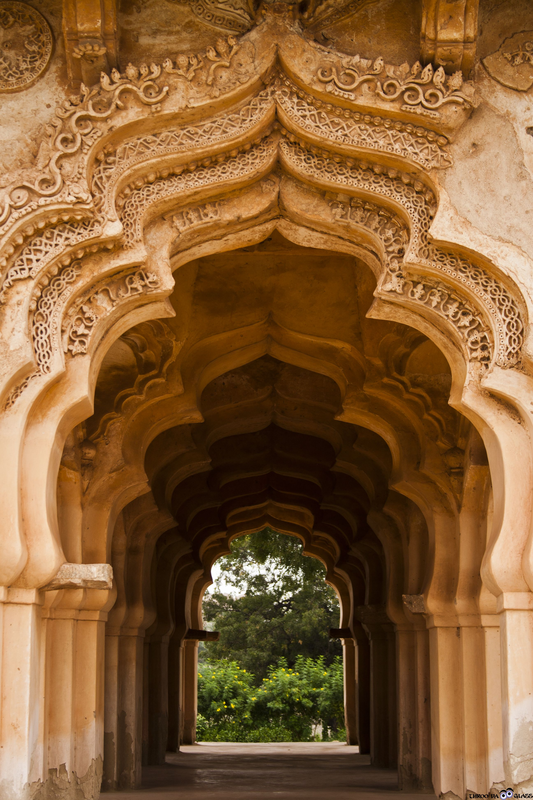
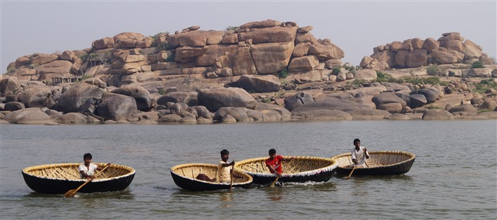
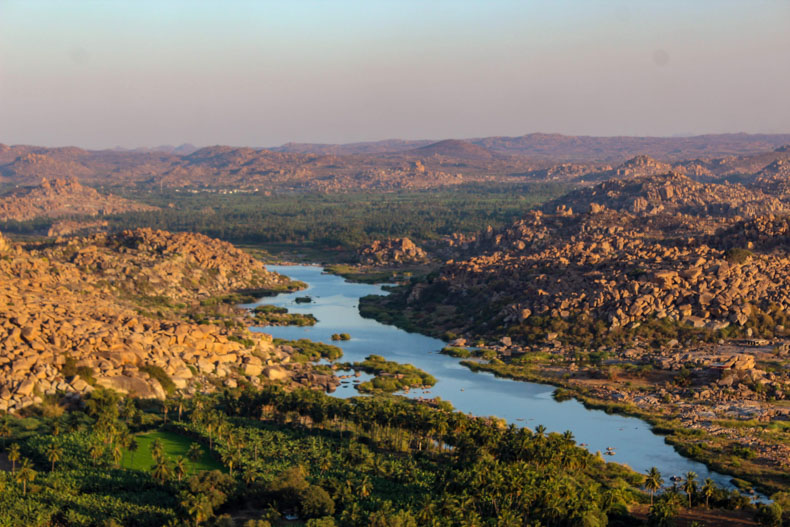
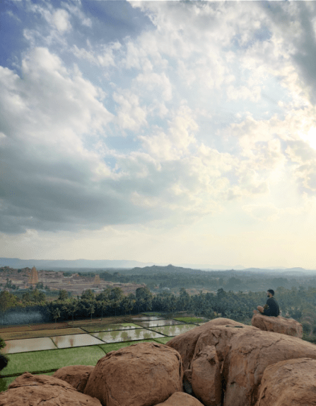

HAMPI
1.Vijaya Vitthala Temple


The Vittala Temple or Vitthala Temple in Hampi is an ancient monument that is well-known for its exceptional
architecture and unmatched craftsmanship. It is considered to be one of the largest and the most famous structure
in Hampi. The temple is located in the north eastern part of Hampi, near the banks of the Tungabhadra River.
The iconic temple has amazing stone structures such as the incomparable stone chariot and the fascinating musical
pillars. This predominant monument of Hampi is a major attraction of the ruined town and is a must-see for visitors
and tourists.
The Vittala temple is built in the Dravidian style of architecture. It has traits and features that are characteristic
of typical south Indian temple architecture. It’s elaborate and artistic carvings and magnificent architecture is unmatched
by any other structure found in Hampi.
2.Virupaksha Temple


Virupaksha Temple is located in Hampi in the Vijayanagara district of Karnataka, India. It is not a part of the Group
of Monuments at Hampi, designated as a UNESCO World Heritage Site. The temple is dedicated to Lord Virupaksha,
a form of Shiva. The temple was built by Lakkan Dandesha, a nayaka (chieftain) under the ruler Deva Raya II
also known as Prauda Deva Raya of the Vijayanagara Empire.
Hampi, capital of the Vijayanagara empire, sits on the banks of the Tungabhadra River. Virupaksha Temple is the
main center of pilgrimage at Hampi, and had been considered the most sacred sanctuary over the centuries. It is
intact among the surrounding ruins and is still used in worship . The temple is dedicated to Lord Shiva, known here
as Virupaksha, as the consort of the local goddess Pampadevi who is associated with the Tungabhadra River. There is
also a Virupakshini Amma temple (mother goddess) in a village called Nalagamapalle, Chittoor district, Andhra Pradesh,
approximately 100 km from Tirupati.
3.Lotus Mahal


As the name given to the palace is because of the shape it resembles. The balcony and the passages covered with a
dome that looks like an opened lotus bud. The central dome is also carved as a lotus bud. The curves of the palace
are given an Islamic touch while the multi-layered roof design is moreover related to Indo style of buildings. The
style and designs is an inquisitive blend of Islamic and Indian way of architecture.
The palace is a two-storied building, well-structured symmetrically. It is surrounded by a rectangular wall and four
towers. These towers are also in pyramidal shape giving a lotus-like structure visual. Around 24 pillars are present
to support the arched windows and balcony of the palace. The walls and pillars are carved beautifully with patterns
like sea creatures and birds.
4.Lakshmi Narasimha Temple


The Lakshmi Narasimha statue and the temple housing the statue were built in the year 1528 A.D. It was constructed
during the rule of Krishnadevaraya, one of the greatest rulers of the Vijayanagara Empire. The temple is dedicated
to Lord Narasimha, one of the ten avatars of Lord Vishnu, and Goddess Lakshmi. As such, the temple is known as the
Lakshmi Narasimha Temple.
The original sculpture had a small figure of Goddess Lakshmi, consort of Narasimha, sitting on his lap. The gigantic
statue was vandalized and mutilated in 1565 A.D. during the raid by the Mughals that led to the fall of the Vijayanagara Empire.
The limbs of Narasimha’s statue were broken during the attack. The figure of Lakshmi was separated from that of Narasimha.
In the process of destruction, one of the hands of Goddess Lakshmi was broken and even today the broken hand of the
Goddess can be seen resting on the back of Narasimha.
5.Coracle ride


Coracles, also known as Dongis sometimes, are round boats traditionally used to ferry people and livestock across
rivers. They have been used in many parts of Asia such as India and Vietnam as well as in parts of Europe such as
Wales and Ireland.The coracles of Hampi are made of bamboo and plastic. They are used to take tourists, max 6-8 people
at a time, across the Tungabhadra river for an enjoyable ride.
You will notice stairs at many places. Those are the spots where you can alight and explore. Some of the temples are
still in use. You will see remains of worship and offerings lying around sometimes. I have a strong feeling there
should be dustbins around, but sadly there aren’t.
You will also notice big holes in the boulders as you cross them. These are the results of erosion when rainwater
raises the levels of water in Tungabhadra. The rainy season is considered dangerous to ride a coracle and these
services are closed at that time.
6.Hippie Island

